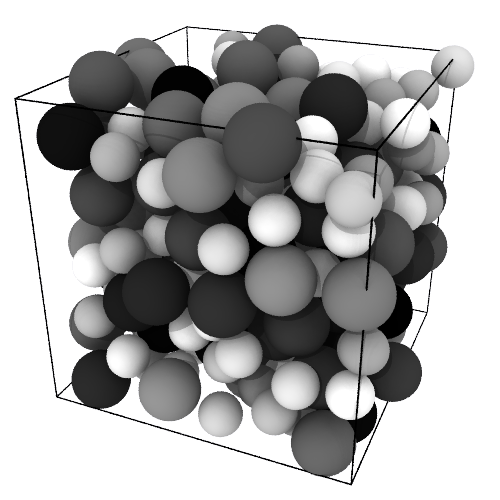
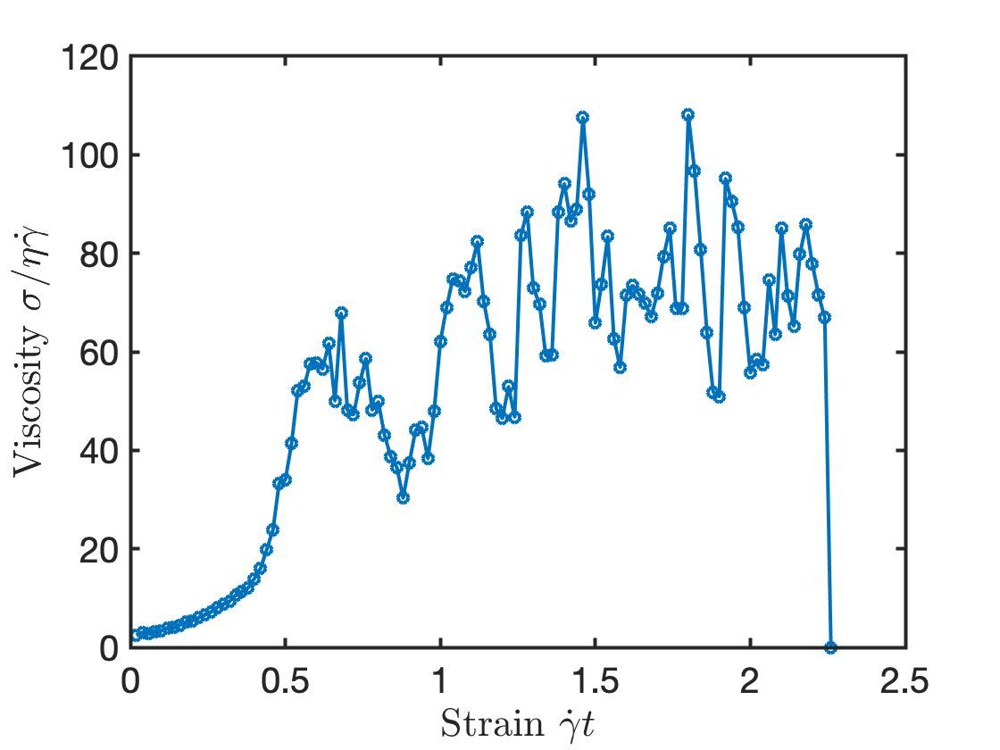

DENSE SUSPENSIONS
LAMMPS TUTORIAL

Get started
Familiarise yourself with the physics of dense suspensions by reading e.g.
Guazzelli and Pouliquen
Next read the tutorial
here
. Other pedagogic articles
are available
The following assumes you are using Mac or Linux and that you have a working knowledge of the terminal.
Download and compile LAMMPS
Download a LAMMPS distribution (I used:
LAMMPS Stable 5th June 2019
)
[Click
here
to download the .zip or
here
to download the .tar.gz]
Using the Terminal, enter the directory:
lammps-stable_5Jun2019/src/
Issue the command:
make yes-GRANULAR
Issue the command:
make yes-COLLOID
Download the lubrication
.cpp file
file and
.h file
and place these in the directory:
lammps-stable_5Jun2019/src/
Enter the directory:
lammps-stable_5Jun2019/src/STUBS/
and issue the command:
make
In my version of Mac (10.15.5) it is necessary to change the compiler settings by entering the directory:
lammps-stable_5Jun2019/src/MAKE/
and issuing the command:
sed -i '' 's/g++/g++-9/g' Makefile.serial
LAMMPS can then be compiled by entering the directory:
lammps-stable_5Jun2019/src/
and issuing the command:
make serial
If successful, you can view the installed packages by running:
./lmp_serial -h
Generate packing at prescribed volume fraction
Download the input script to generate a particle packing:
in.create
and place it in the same directory as
lammps-stable_5Jun2019
is in
Issue the command:
lammps-stable_5Jun2019/src/src/lmp_serial -in in.create
Download a
video of in.create simulation
Run a rheology simulation
Download the input script to shear the particle packing:
in.run
and place it in the same directory as
lammps-stable_5Jun2019
is in
Issue the command:
lammps-stable_5Jun2019/src/src/lmp_serial -in in.run
Download a
video of in.run simulation

Animations are generated using
Ovito
. Always refer to the
LAMMPS website
. Contact me: chris.ness@ed.ac.uk.